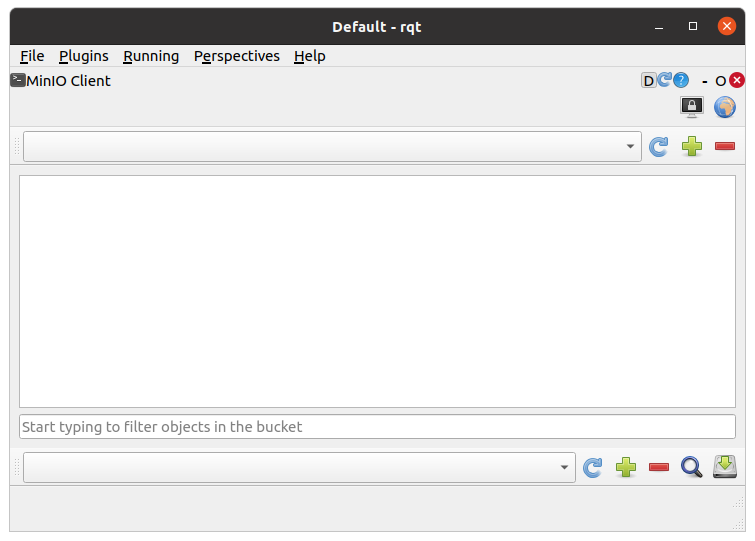
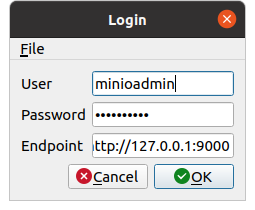
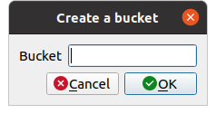
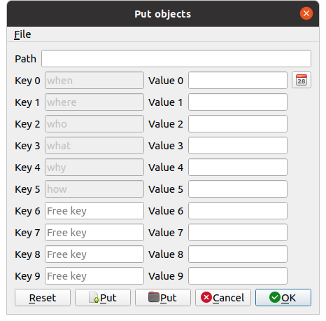
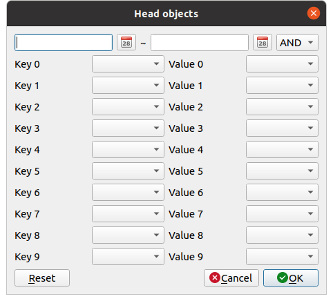

MinIO Client¶
ここでは、MinIO Clientの使い方を説明します。MinIO Clientは、オブジェクトストレージMinIOのオブジェクトを操作するrqtの拡張機能です。
MinIO Clientの起動¶
MinIO Clientを起動する手順は次のとおりです。
メインメニュー「Plugins」-「Miscellaneous Tools」-「MinIO Client」を選択する
ユーザ情報の認証¶
MinIOのサーバに接続するためのユーザ情報を設定します。ユーザ情報を設定する手順は次のとおりです。
画面右上のボタン（ディスプレイがロックされているアイコン）を押す
表示されたダイアログにUser、Password、Endpointを入力する
ダイアログのOkボタンを押す
MinIOのサーバのUser、Passwordの初期値は「minioadmin」です。EndpointはMinIOのサーバの管理者に確認して入力ください。 ユーザ情報の認証が成功すると、画面上部のコンボボックスからMinIOのサーバ上にあるバケットを選択できるようになります。
バケットの作成¶
バケットを新たに作成する場合は、次の手順で行います。

ツールバー（上）右の＋ボタンを押す
表示されたダイアログにバケット名を入力する
ダイアログのOkボタンを押す
ファイルのアップロード¶
MinIOのサーバにファイルをアップロード（プット）する場合は、次の手順で行います。

ツールバー（下）右の＋ボタンを押す
表示されたダイアログにPathを入力する（任意）
Key、Valueを入力する（Value 0〜Value 5は必須）
ダイアログのPutボタンを押してアップロードするファイルまたはフォルダを選択する
ダイアログのOkボタンを押す
オブジェクトのダウンロード¶
MinIOのサーバからファイルをダウンロード（ゲット）する場合は、次の手順で行います。
ダウンロードしたいオブジェクトにチェックをいれる
ツールバー（下）右のハードディスクボタンを押す
オブジェクトの保存先を入力する
ダイアログのOkボタンを押す
オブジェクトの抽出¶
MinIOのサーバ上のオブジェクトを抽出（検索）する場合は、次の手順で行います。
ツールバー（下）右のボタン（ルーペのアイコン）を押す
期間を入力する（例：20231109）
抽出の種類（AND/OR）を選択する
Keyを選択する（任意）
3.で選択したKeyのValueを選択する
ダイアログのOkボタンを押す
オブジェクトの抽出が成功すると、オブジェクトのリストが表示されます。
